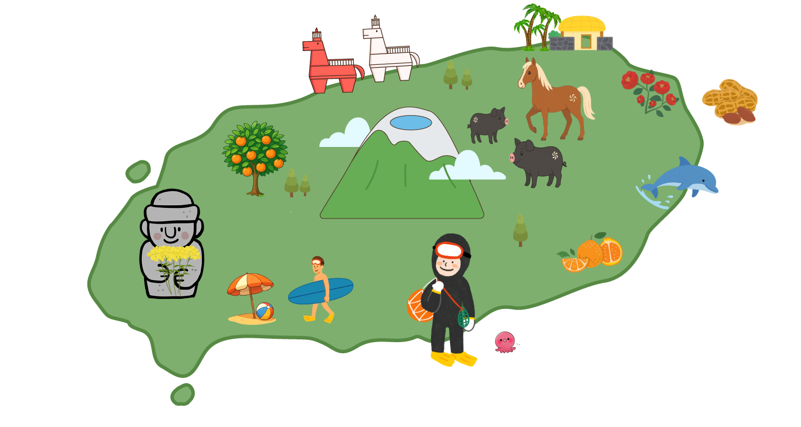

제주 이야기
지금, 제주와 닿아보는 시간을 가져보세요.
제주도의 이야기를 담다
천혜의 자연환경과 독특한 문화가 공존하는 섬, 제주
대한민국 최남단에 위치한 제주도는 화산활동으로 탄생한 섬으로, 세계자연유산으로 등재된 한라산, 거문오름 용암동굴계, 성산일출봉 등 탁월한 자연경관을 품고 있습니다.
해녀문화, 돌담, 전통마을은 제주만의 삶의 방식을 고스란히 간직하고 있으며, 사계절 내내 자연, 휴식, 체험, 문화를 모두 경험할 수 있는 특별한 여행지입니다.
위치
대한민국 최남단, 한반도에서
남쪽으로 약 130km 떨어진 섬
면적
약 1,849km²
(한국 최대의 섬)
인구
약 70만 명
(2025년 기준 추정)
기후
온대 해양성 기후 여름 덥고
겨울은 비교적 따뜻
대표도시

제주시 (북쪽)
서귀포시 (남쪽)
제주 문화와 전통
제주어
독자적인 방언 (보존 위기 언어로 지정됨)
전통
초가집, 성읍민속마을 등 전통마을 유산
돌하르방
마을의 수호신 같은 존재, 현무암으로 조각
해녀문화
전통적으로 물질을 해온 여성들, 유네스코 인류무형문화유산
특산물
감귤, 한라봉, 흑돼지, 옥돔, 자리돔, 갈치, 녹차, 오메기떡 등
대표명소
한라산, 성산일출봉, 만장굴, 주상절리대, 용두암, 천지연/정방폭포
계절 따라 물드는 제주
푸른 바람이 머물고, 계절이 발자국처럼 남는 섬. 제주도는 자연이 만든 작품이자, 한국인이 가장 사랑하는 여행지입니다
사계절 내내 색이 바뀌고, 바람에 실린 이야기가 다르게 들리는 제주. 그 속에는 걷고, 쉬고, 머물고 싶은 모든 이유가 담겨 있습니다.